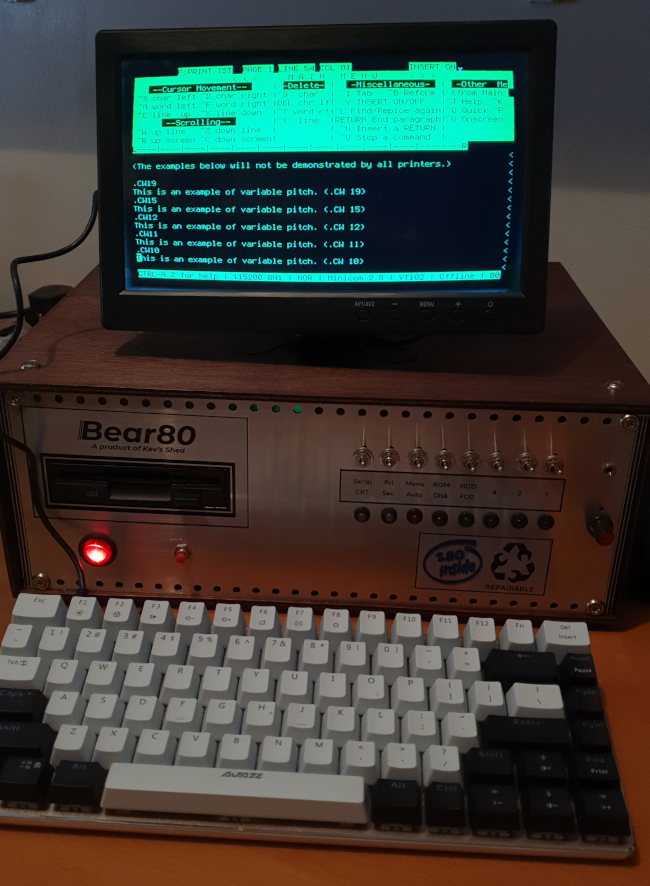

Is Fahrenheit 451 becoming relevant again?

Ray Bradbury’s novel Fahrenheit 451 envisages a future where books – all books – are banned, because of the risk they pose to a totalitarian state. Books, after all, contain knowledge, including the knowledge of how things used to be. They inspire us to look beyond the narrow confines of our experience, and to ask whether things could be better. In the world of Fahrenheit the role of the “fireman” is not to put out fires, but to start them, using books as fuel.
The novel follows the fortunes of one such fireman, Guy Montag, as he gradually awakens to the pointless destructiveness of his day-job (been there!) and finally rebels.
Fahrenheit has, on the whole, not stood the test of time.
Attempts to adapt the story for TV and cinema in the last twenty years have been dismal failures. That’s because we no longer rely on books for knowledge or, in fact, on any physical medium. Knowledge is distributed around the world on a vast network of computing devices.
One TV adaptation has Montag and his associates destroying personal computers, rather than books. When I saw this I was appalled. Did the writers not know, I wondered, that the computer itself was not the repository of the information the state feared? You can destroy my laptop, but that won’t destroy the information I access with it. Montag would have done better to bomb the huge server farms in Nevada.
Recent developments have made me wonder whether I was too hasty in my condemnation.
In the US, and elsewhere, moves are afoot to force the vendors of computer operating systems to carry out age verification at the platform level. Doing this properly – not in the half-arsed way it’s currently being done – would turn every computer into a surveillance platform.
We’re already most of the way there. All the mainstream desktop operating systems, and much of the software that runs on them, are essentially telemetry agents, collecting data about their users and sending it of to goodness knows where. Software vendors do this to profile their users, with a view to showing them more effective advertising. Whatever the motive, the consequence is that we’re all under surveillance, whenever we use our computers. And our smartphones. And many other computer-based appliances. Even our cars.
At the same time, operating-system vendors are acting to regulate the kind of software we can run on our computers, by restricting us to authorized software marketplaces. Apple has always done this to some extent; Microsoft and Google are starting to do it. It might not be long before we’re simply unable to run the kind of non-tracking, ad-free open-source software that privacy enthusiasts advocate, because there will be no source for it that our computers will accept.
It would be nice to think that the Linux operating system, at least, would be immune to this kind of outside interference. After all, Linux isn’t controlled by the tech giants. But no: it seems that legal developments in the US will apply to Linux, and the maintainers of Linux distributions are already panicking about what to do.
What’s striking about the recent US age verification regulations is that they show – perhaps for the first time – direct, state control over how we may use our computers. We’ve gotten used to corporations acting this way, but at least their motives are clear: profit. The motivations of our legislators are muddy: ostensibly these recent developments are to protect children from harmful online content – a worthy enough goal. In reality, they’re attention-seeking, bandwagon-jumping tactics to garner votes. Once our political leaders get a taste for this kind of thing, there’s no limit to the absurdity of the regulations they’ll create, because they won’t be tempered by any kind of technological knowledge.
I fear that the era of “open computing” is coming to an end. At present, if we’re careful in our choice of hardware and operating system, we can still install the software we like, from whomever we like, and use it as we like, free from corporate or governmental oversight.
But if we carry on as we are, before long every computing device will be controlled by a cartel of governments and mega-corporations. We’ll only be able to run approved software, selected for its willingness to monitor us and monetize us. Everything else will be banned, and our governments will be able to use the bogeyman of child protection to stifle dissent. When this happens, “unregulated” computers and software – those not subject to governmental and corporate oversight – could become an unlawful, black-market commodity.
We could thus end up in a situation where Guy Montag and his crew are burning computers after all; not the shiny, new ones that have been deemed safe for the public, but old Thinkpads and bootleg DVDs of Ubuntu and Fedora.
In Fahrenheit, Montag eventually joins a community of rebels who have made themselves into living books, each member memorizing one of the classics. Perhaps we’ll rebel by building retrocomputers like my Bear80.

Bear80 runs the CP/M operating system, which had its heyday before most people now living were even born. For all its faults, CP/M is incapable of being used for digital surveillance, and could one day be deemed a threat to the state.
Of course, the computer itself isn’t the problem, because that’s not where the subversive material is stored. My floppy disks containing copies of David Copperfield and Pride and Prejudice are safely hidden behind the loose brick in my bedroom wall.
Have you posted something in response to this page?
Feel free to send a webmention
to notify me, giving the URL of the blog or page that refers to
this one.